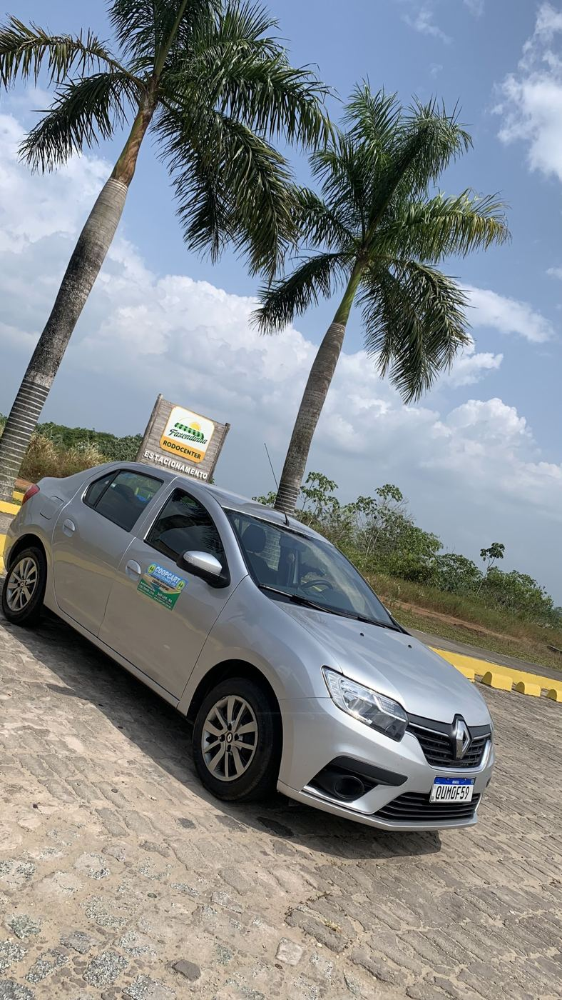
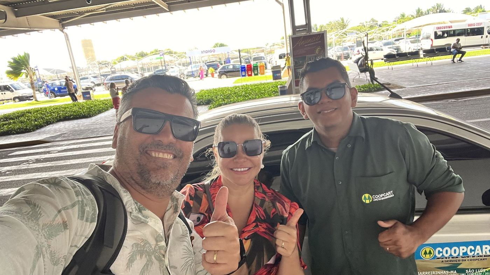
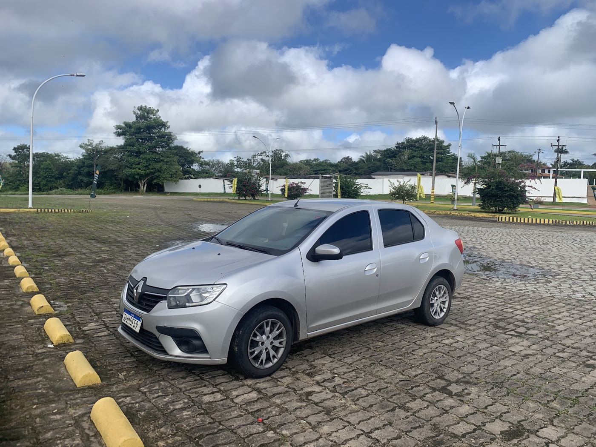
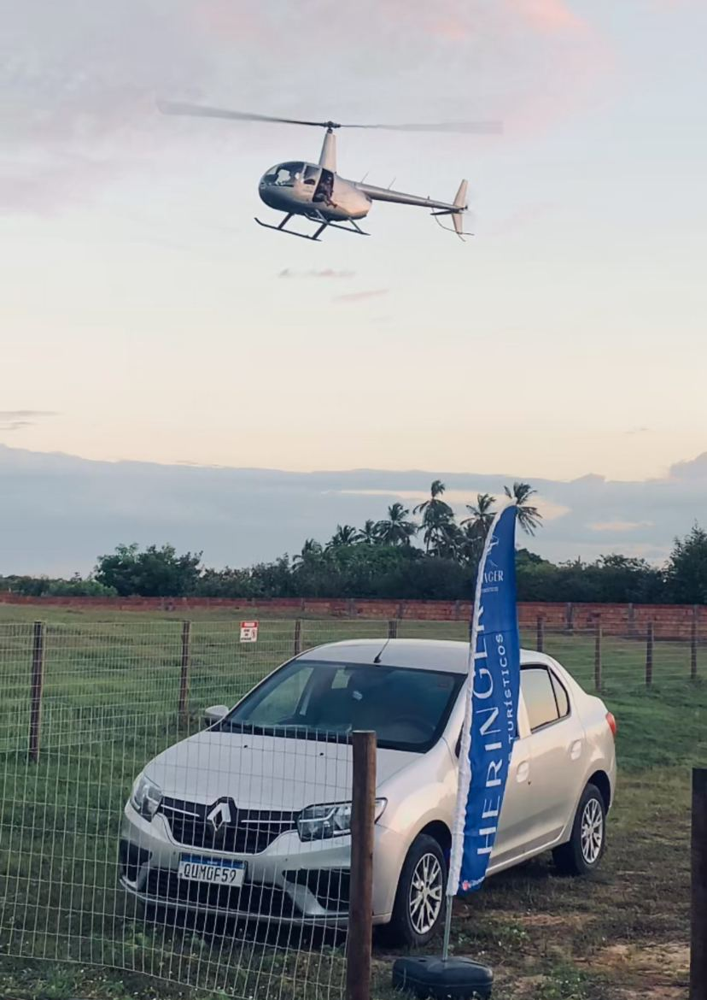

São Luís e Barreirinhas
Transfer privativo do aeroporto até a porta da sua pousada, com carro só para você e motorista que acompanha o seu voo.

Aeroporto de São Luísou hotel na capital
Barreirinhasporta da sua pousada
Calcule seu transfer
Informe o trecho e o horário do voo. Mostramos a hora de saída e de chegada e você manda o pedido pronto pelo WhatsApp.
Por que privativo
Acompanha o seu voo
Atraso no pouso não é problema. O motorista ajusta a busca ao horário real, de dia ou de madrugada.
Carro só para você
Sem esperar outros passageiros nem passar em outras pousadas. Sai do aeroporto e vai direto.
Viagem no seu ritmo
Parada para café, almoço ou banheiro quando precisar. Família com criança pequena viaja tranquila.
4,9 no Google, com 106 avaliações
“Nosso voo foi de madrugada, então chegamos cansados e dormimos boa parte da viagem. Ele fez uma parada para o café da manhã na estrada para Barreirinhas. Excelente!”
“Foi pontual, bem comunicativo e paciente. Estávamos com duas crianças pequenas no carro. Recomendo grandemente!”
“Motorista pontual, super atencioso, muito profissional, dirige super bem e o carro é muito bom.”
“Foi uma viagem bem tranquila! O Denison é pontual com os horários e um excelente motorista.”



Combine seu transfer
- (98) 98718-5676
- Horário
- 24 horas, todos os dias
- Base
- Centro, Barreirinhas (MA)